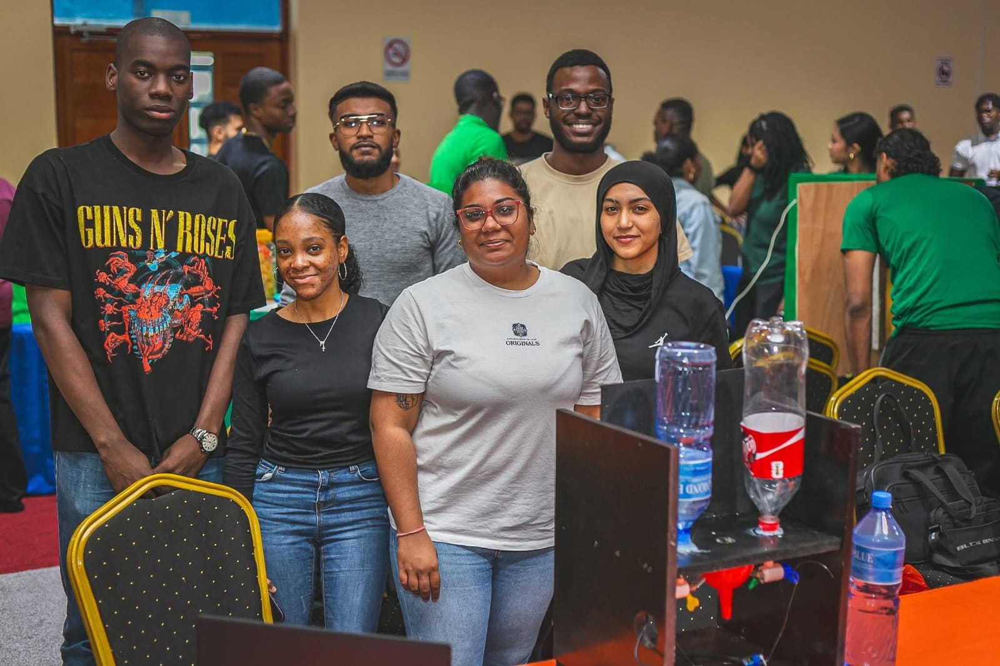

Shaguel Kortstam
HBO ICT Student | Software Engineering | UNASAT

HBO ICT Student | Software Engineering | UNASAT
Voor mijn module Programming Fundamentals werk ik aan het project EduWallet. Dit is een innovatieve oplossing gericht op het onderwijs, waarin ik mijn passie voor data en software combineer.
Samen met groepsleden heb ik gewerkt aan een prototype genaamd Mixratio Wizard. Deze machine moet ervoor zorgen dat dranken altijd een consistente smaak hebben en automatisch schenkt wanneer je je beker eronder plaatst.
We gebruikten een ESP32-kit als basis voor de besturing en hebben daarvoor praktische onderdelen aangeschaft, zoals trechters, flessen en andere materialen om het prototype op te bouwen. Het project richtte zich op het combineren van hardware en software om een betrouwbare, automatische drinkervaring te realiseren.
